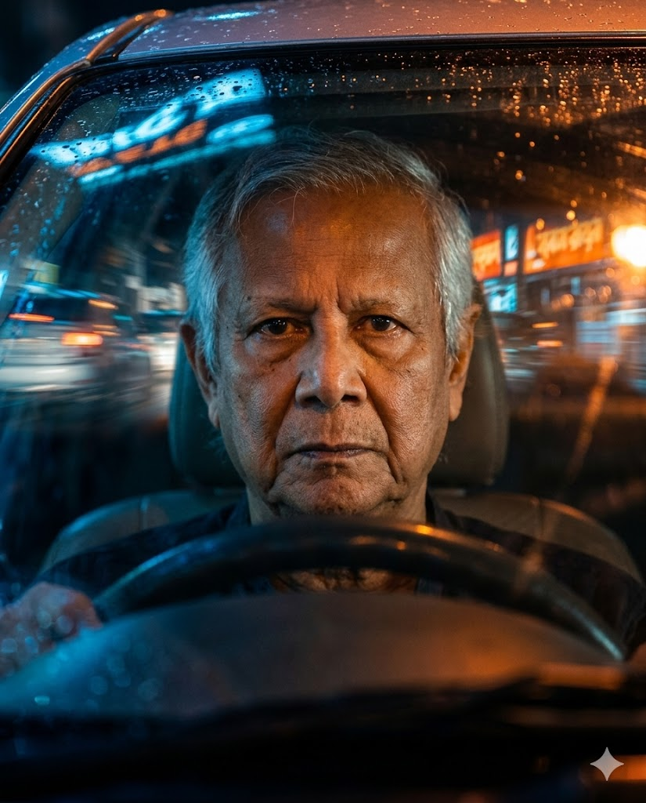

"How to Create a Cinematic Night Portrait Through a Car Windshield" | Brainloom
Generate a moody, cinematic night portrait of yourself inside a car, viewed through the front windshield with neon reflections and split-color lighting. This prompt ensures perfect facial identity while capturing tension, atmosphere, and optical complexity.
Generated Images

Prompt Explanation
The Prompt
A cinematic night portrait of me with exact same facial and physical identity from the uploaded image inside a car, viewed through the front windshield. my gaze cuts sharply through the glass piercing, focused, unresolved. Foreground reflections blur across the surface like smears of neon and motion. The camera captures him dead-center, steering wheel framing the lower third, face illuminated by ambient orange city glow. Shot with a 100mm lens from low exterior angle compression isolates the subject, with tight depth framing. The windshield adds optical chaos: ghosted highlights, distortion, and flare stack across the lower frame. The blue tint from outside contrasts the orange interior bounce, forming a split-color palette that heightens emotional pressure. Lighting is entirely diegetic orange sodium reflections from street signage cast diagonals across the cabin. A faint cyan ambient tone seeps in from the exterior separating subject from environment. The driver's face is part-shadowed, part-sculpted by bouncing light, while the rest of the scene dissolves into color planes and blur. Skin realism is grounded but intentionally masked by optics. Light bloom softens forehead and nose bridge, while subtle pore texture remains visible beneath scattered reflections. Eye catchlight shimmers faintly. Glass layers, smudges, and reflection bleed filter clarity into cinematic abstraction. Atmosphere is saturated with silence and withheld action tension hovers just before movement. A moment held like breath, framed in glass, color, and intent. --ar 4:5 --raw
How to Use This Prompt
Begin by selecting a strong reference photo of your face with clear features and neutral lighting. Upload this image to your AI generator and copy the link. Paste the link first, then add the complete prompt text. The key to this prompt is understanding that it describes a complex visual layering effect—you're not just in a car, you're being viewed through a windshield that adds reflections, distortion, and color separation. When you run the first generation, pay close attention to how the AI handles the glass elements. Look for the 'orange city glow' on your face and the 'cyan ambient tone' from outside. The 'split-color palette' is essential to the mood. If the reflections are too subtle or too overpowering, adjust the language—try 'strong neon reflections' or 'subtle ghosted highlights.' The --ar 4:5 sets a vertical aspect ratio that's slightly less tall than 9:16, giving a more classic portrait feel. The --raw parameter is critical here because it preserves the texture and grain you want. If your face isn't perfectly captured, select the closest image and generate variations. Sometimes the AI might place you on the wrong side of the car or misalign the steering wheel—if that happens, add 'driver's side, right-hand drive' or specify the steering wheel position more clearly. Run multiple iterations, tweaking the reflection intensity and color balance each time until the image captures that 'moment held like breath' feeling.
Why This Prompt Works
This prompt is exceptionally effective because it treats the windshield not as an obstacle but as an essential creative element. Most portrait prompts would ask for a clear view of the subject. This one actively embraces optical chaos—'ghosted highlights, distortion, and flare stack'—and turns them into features. The AI understands that these aren't flaws to correct but effects to generate. The prompt's structure follows a logical visual journey: it establishes the subject and identity first, then the framing through the windshield, then the lighting sources, then the specific optical effects, and finally the emotional atmosphere. This hierarchy helps the AI prioritize correctly. The technical specificity is remarkable. 'Shot with a 100mm lens from low exterior angle' tells the AI exactly how to position the virtual camera. A 100mm lens compresses space and isolates the subject, creating that tight, intimate feel. 'Compression isolates the subject' reinforces this instruction. The lighting description is masterful: 'diegetic orange sodium reflections from street signage cast diagonals across the cabin.' 'Diegetic' means the light sources exist within the scene itself—street signs, city glow—rather than being added artificially. This creates a grounded, realistic feel. The split-color palette instruction—'blue tint from outside contrasts the orange interior bounce'—gives the AI a specific color script to follow, preventing muddy or muddy lighting. The prompt also shows deep understanding of human perception and AI behavior. 'Skin realism is grounded but intentionally masked by optics' tells the AI that while skin should look real, it's okay—desirable, even—for glass reflections and light to partially obscure it. This prevents the AI from overcorrecting and trying to show every pore clearly, which would ruin the atmospheric effect. The final emotional direction—'atmosphere is saturated with silence and withheld action'—gives the AI a feeling to aim for, unifying all the technical elements into a coherent mood.
Prompt Variations
- {'variation': "Change the setting to 'viewed through a rain-streaked window of a nighttime train' with 'warm interior lighting contrasting cold blue exterior landscapes.' This shifts the scene from static tension to quiet motion, perfect for travel-inspired or reflective concepts."}
- {'variation': "Modify the color palette to 'neon purple and green reflections from city nightlife' and the mood to 'electric anticipation, energy before the night begins.' This variation transforms the melancholy tension into vibrant excitement, ideal for nightlife or music-themed portraits."}
- {'variation': "Replace the car interior with 'a cozy coffee shop window at dusk' and the reflections with 'warm lamplight and passing pedestrians blurred on the glass.' This creates a more intimate, everyday cinematic moment while maintaining the optical layering effect."}
Frequently Asked Questions
-
What does 'diegetic lighting' mean and why is it important?Diegetic lighting means the light sources exist within the scene itself—like street signs, headlights, or city glow—rather than being added externally. This creates a more realistic, immersive atmosphere because the light behaves naturally, casting shadows and reflections that make sense within the world of the image.
-
How do I balance the reflections so they don't hide my face completely?The prompt already balances this with 'skin realism is grounded but intentionally masked by optics.' If reflections are too strong, add 'subtle reflections, face clearly visible beneath glass.' If too weak, use 'prominent neon reflections across windshield.' The key is iterative adjustment based on your results.
-
What is 'split-color palette' and how does it affect the mood?Split-color palette refers to using contrasting colors in different parts of the image—here, warm orange inside the car against cool blue outside. This creates visual tension and emotional complexity, making the viewer feel the contrast between the intimate interior space and the cold exterior world.
Related Prompts

Split Focus Cinematic Portrait Poster
Create a minimalist cinematic poster with a split focus effect. Features a portrait with 100 facial likeness, split v...
View Prompt
How To Create A Cinematic Editorial Portrait Prompt
Generate a striking, high-contrast portrait that maintains your exact facial identity. This prompt uses cinematic lig...
View Prompt
Red Monochrome Power Portrait
Generate a powerful ultra-realistic portrait of a specific person in a black blazer and turtleneck, drenched in inten...
View Prompt
Mirror Selfie Contemporary Fashion
AI prompt for a candid, full-body mirror selfie of a stylish man indoors. The subject crouches, looking into a smartp...
View Prompt
Realistic Billiards Player Portrait Prompt
AI prompt to create a hyper-realistic portrait of a billiards player. A man in a brown polo jersey leans over a blue ...
View Prompt
Augmented Reality Music Ui Ai Prompt Spotify Cards Floating
AI prompt creates augmented reality scenes with floating Spotify and Apple Music UI cards orbiting around your portra...
View Prompt